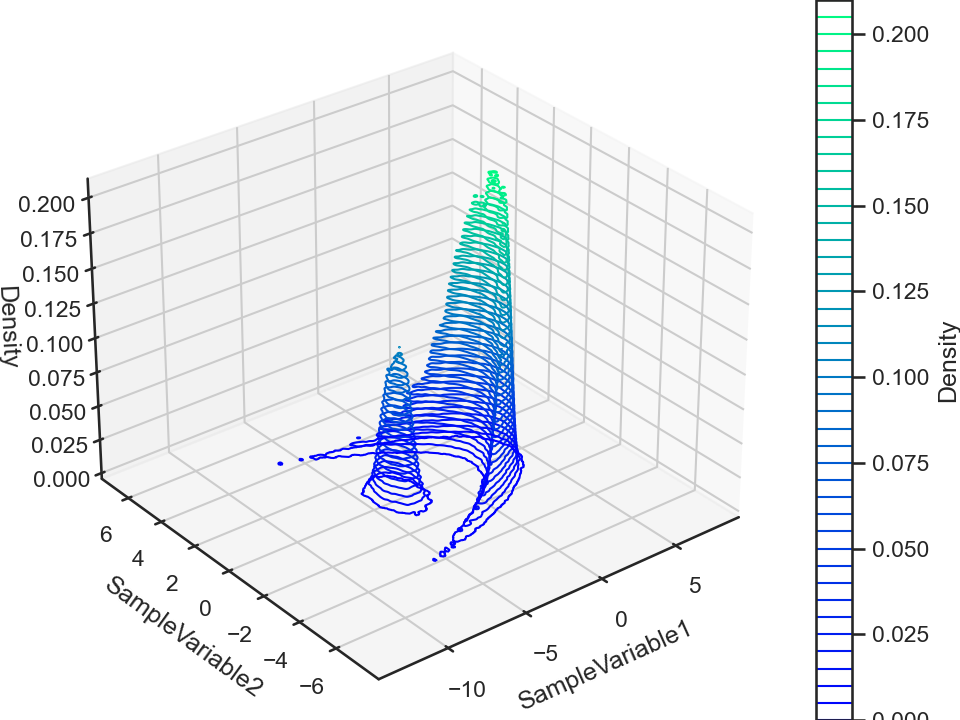
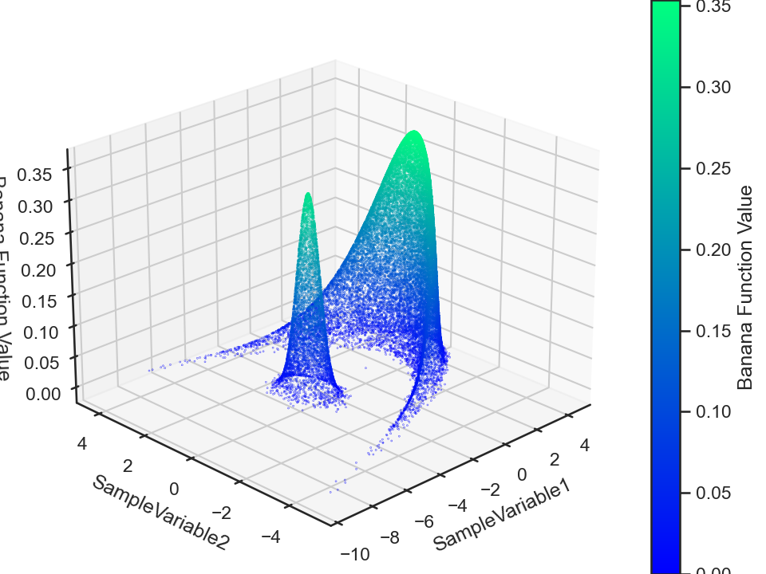
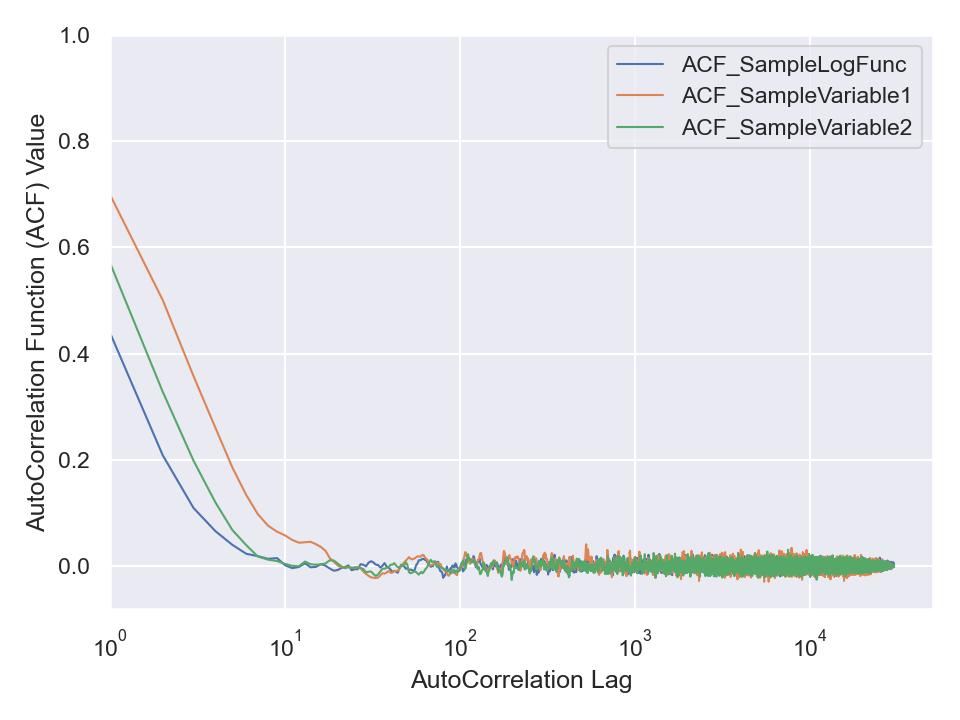

Consider the following Banana function.
def getLogFuncBanana(point):
import numpy as np
from scipy.stats import multivariate_normal as mvn
from scipy.special import logsumexp
NPAR = 2 # sum(Banana,gaussian) normalization factor
normfac = 0.3 # sum(Banana,gaussian) normalization factor
lognormfac = np.log(normfac) # sum(Banana,gaussian) normalization factor
a, b = 0.7, 1.5 # parameters of the Banana function
MeanB = [ -5.0 , 0. ] # mean vector of Banana function
MeanG = [ 3.5 , 0. ] # mean vector of Gaussian function
CovMatB = np.reshape([0.25,0.,0.,0.81], newshape = (NPAR,NPAR)) # Covariance matrix of Banana function
CovMatG = np.reshape([0.15,0.,0.,0.15], newshape = (NPAR,NPAR)) # Covariance matrix of Gaussian function
LogProb = np.zeros(2)
# transformed parameters that transform the Gaussian to the Banana function
pointSkewed = [ -point[0], +point[1] ]
# Gaussian function
LogProb[0] = lognormfac + mvn.logpdf(x = pointSkewed, mean = MeanG, cov = CovMatG) # logProbBanana
# Do variable transformations for the Skewed-Gaussian (banana) function.
pointSkewed[1] = pointSkewed[1] * a
pointSkewed[0] = pointSkewed[0] / a - (pointSkewed[1]**2 + a**2) * b
# Banana function
LogProb[1] = mvn.logpdf(x = pointSkewed, mean = MeanB, cov = CovMatB) # logProbBanana
return logsumexp(LogProb)
We wish to generate random sample from the distribution function represented by this Python function. We do so via the ParaMonte library’s ParaDRAM MCMC sampler,
!pip install --upgrade --user paramonte
import paramonte as pm
sim = pm.paradram()
sim.spec.chainSize = 30000
sim.runSampler( ndim = 2
, getLogFunc = getLogFuncBanana
)
This sampler outputs an MCMC chain that we can subsequently visualize,
%matplotlib notebook
import numpy as np
chain = sim.readChain(renabled = True)[0]
chain.df["Banana Function Value"] = np.exp(chain.df.SampleLogFunc.values)
chain.plot.contour3()
chain.plot.contour3.savefig(fname = "bananaFuncContour3.png")
chain.plot.scatter3.scatter.kws.s = 0.03
chain.plot.scatter3.scatter.kws.cmap = "winter"
chain.plot.scatter3(zcolumns = "Banana Function Value", ccolumns = "Banana Function Value")
chain.plot.scatter3.savefig(fname = "bananaFuncScatter3.png")


Now, this MCMC chain is a time-series data, meaning that we can compute its autocorrelation (for each data attribute). The ParaMonte library does this for us automatically which we can visualize via,
chain.stats.autocorr.plot.line()
chain.stats.autocorr.plot.line.savefig(fname = "bananaCompactChainACF.png")

Obviously, the three attributes of this chain are autocorrelated. But, we can remove traces of autocorrelation by choosing an appropriate step by which we jump over (skip) the data to thin (or reduce or decorrelate or refine the chain). Choose such an appropriate step size and refine the data in chain.df and then compute the autocorrelation of the refined data via scipy.signal.correlate function. Then, visualize it similar to the above illustration by the ParaMonte library to ensure the refinement process has truly removed the autocorrelation from your data.
import numpy as np
from scipy.signal import correlate
attribute = attribute - np.mean(attribute)
nlag = len(attribute) - 1
acf = np.zeros(nlag)
acf = correlate ( attribute
, attribute
, mode = "full"
)[nlag:2*nlag]
acf = acf / acf[0]